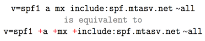

SPF entry
Entry of SPF•
version number tag: usually v=spf1 begins each SPF record
•
mechanism: method you are using to identify the host(s).
◇ ip4:<ip-address> → The email coming from the IPv4 address will be identified as valid
◇ ip6
◇ a:<domain> → will check the A record of the domain. The email coming from the IPaddress of the A record will be identified as valid. If the domain is not specified, the current domain is used
◇ mx:<domain> → will check the MX record of the domain
◇ ptr
◇ exists
◇ include:<domain> → specifies other domains that are authorized domains
▪ include:_spf.google.com , The "include" mechanism includes Google mail servers in the list of authorized sending servers
◇ all → usually goes at the end of the SPF record
▪ -all → if host is not listed should be discarded/blocked
▪ ~all → if host is not listed should be marked as spam by the receivers because probably not authorized
SPF qualifiersThe default qualifier is +
• + → Pass, an IP that matches a mechanism with this qualifier will pass SPF
• - → Fail, an IP that matches a mechanism with this qualifier will fail SPF
• ~ → SoftFail, an IP that matches a mechanism with this qualifier will soft fail SPF, which means that the host should accept the mail, but mark it as an SPF failure(probably a spam)
• ? → Neutral, an IP that matches a mechanism with this qualifier will neither pass or fail SPF
SPF modifiers • redirect=<domain> → SPF record for <domain> replaces the SPF record for the current domain. The redirect modifier is useful to those that wish to apply the same record to multiple domains
example